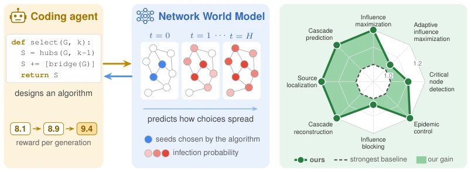
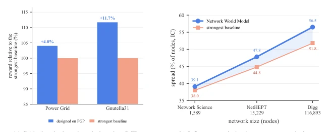
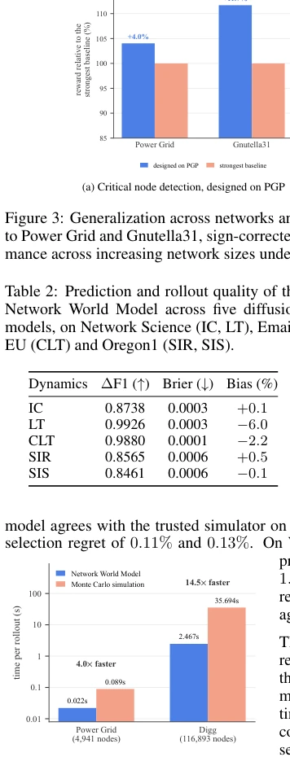
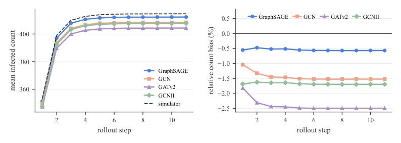
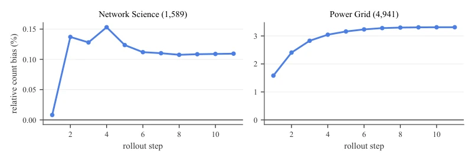

This paper transfers "World Models" from robot control to complex network algorithm design, effectively providing a more efficient "sandbox" for LLMs to write code. The authors do not learn policies directly but rather learn environment dynamics, enabling the Agent to iterate algorithms within simulations. This approach is quite clever, given that network diffusion computation is #P-hard and traditional simulations are too slow. However, a point of critique is that this model only runs in simulation; in real-world social networks, can intervention effects be this accurate? The 14.5x speedup is indeed attractive, but if the model learns biasedly, would the Agent not be optimizing within "hallucinations"? Nevertheless, winning against the baseline in 138/141 settings indicates this "sandbox" is quite reliable, at least superior to guessing algorithms purely by luck. Furthermore, it provides counterfactual feedback, which is significantly better than simply providing a Reward.
研究动机Motivation
复杂系统（如社交网、电网）的算法设计核心难点在于评估：选哪些节点干预，效果如何？经典方法依赖蒙特卡洛模拟，计算成本极高（Kempe et al., 2003; Chen et al., 2010a）。现有学习法要么任务特定（Xia et al., 2021），要么只预测结果不模拟动态。世界模型（Ha & Schmidhuber, 2018）虽能模拟环境，但多用于图像或低维状态，缺乏对图结构及干预动作的建模。本文旨在解决这一痛点：能否构建一个能理解网络干预动作的 World Model，作为算法设计的快速评估环境？现有工作如 Hafner et al. (2025) 主要关注视频，未触及网络干预的因果性，导致算法设计缺乏通用且高效的评估器。
The core difficulty in algorithm design for complex systems (such as social networks, power grids) lies in evaluation: which nodes to intervene on, and what is the effect? Classic methods rely on Monte Carlo simulations, with extremely high computational costs (Kempe et al., 2003; Chen et al., 2010a). Existing learning methods are either task-specific (Xia et al., 2021) or only predict outcomes without simulating dynamics. World Models (Ha & Schmidhuber, 2018) can simulate environments but are mostly used for images or low-dimensional states, lacking modeling of graph structures and intervention actions. This paper aims to solve this pain point: Can we construct a World Model that understands network intervention actions to serve as a rapid evaluation environment for algorithm design? Existing work such as Hafner et al. (2025) mainly focuses on video, failing to address the causality of network interventions, resulting in a lack of general and efficient evaluators for algorithm design.
The overall process is divided into two parts: Network World Model (NWM) training and LLM algorithm design Agent search. NWM adopts a graph neural network simulator, divided into two steps: first, precisely apply interventions using $T_{exo}$ (modifying node states/edges), then predict subsequent diffusion dynamics via $f_ heta$. This "intervention + dynamics" decoupled design reduces intervention semantic errors. At the Agent end, the LLM generates candidate algorithms, and NWM performs multi-trajectory rollout scoring. The key innovation lies in the feedback mechanism: besides task scores, NWM also provides rollout diagnostics (process evolution), action-level Credit (contribution), and counterfactual probes (unselected action evaluation). Theoretical analysis proves that selection regret is constrained by one-step transition error and search sub-optimality. This enables the Agent to correct code based on specific errors, rather than blind search.

Figure 1: A coding agent writes algorithms that choose interventions on a network, and a Network World Model rolls out how each choice unfolds, returning a reward, feedback, and probe answers the agent uses to improve the algorithm (left). Across eight tasks on complex networks, the agent- designed algorithms outperform the strongest baselines, averaged over budgets (right).
Tested on 8 tasks (such as influence maximization, critical node detection) and 5 diffusion models (IC, LT, SIR, etc.). Datasets cover Network Science, Digg, Power Grid, etc. Compared to the strongest baseline, the designed algorithms won in 138 out of 141 settings. NWM's rollout speed is 14.5 times faster than Monte Carlo simulations (Digg dataset). Cross-network generalization tests show that algorithms designed on PGP remain effective when transferred to Power Grid. Ablation studies indicate that counterfactual probes and action Credit are crucial for algorithm iteration. Furthermore, different LLMs as Coding Agents show little performance difference, indicating the framework has strong robustness.

Figure 3: Generalization across networks and scales. (a) Critical node detection transfer from PGP to Power Grid and Gnutella31, sign-corrected so higher is better. (b) Influence maximization perfor- mance across increasing network sizes under IC at the 10% budget.

Figure 4: Wall-clock time of one rollout sample under the Network World Model and Monte Carlo simulation, log scale.

Figure 6: The four encoders on Network Science. Left: mean infected count of the free-running sampled rollout at each step, against the simulator (dashed). Right: the same rollouts as relative count bias by step; the bias settles within the first five steps on every backbone and does not grow with the horizon.

Figure 7: Relative count bias of the free-running sampled rollout by step on the two benchmark networks, on the 50 held-out episodes of the main runs. The bias settles within the first few steps on both networks and does not grow.